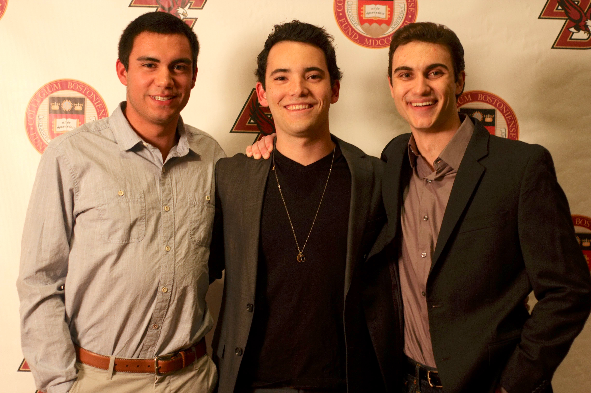
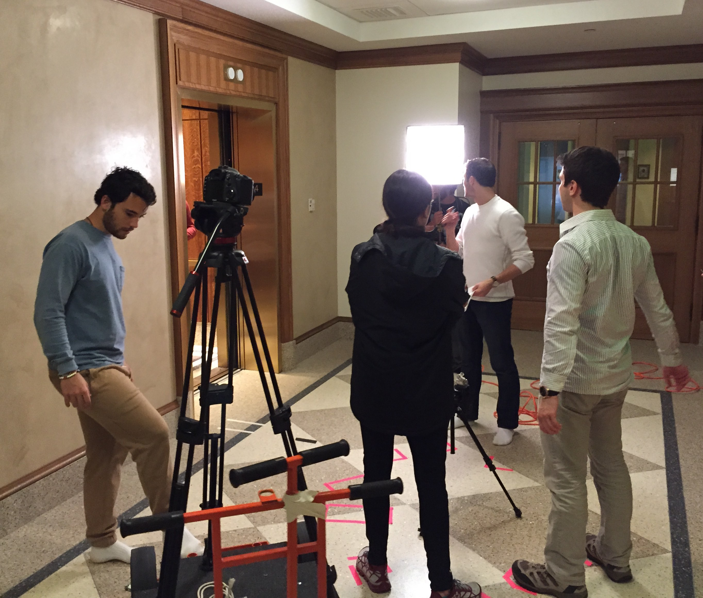

Mod of Cards
Background
During my Summer 2014 internship at Sync On Set (they just won an Emmy!), I got to know Derek Switaj, the other intern also from Boston College. As it would turn out, Derek was an aspiring writer and he came to me at the end of the Summer with a pilot of a series he was looking to bring to life. I was skeptical at the time because I know as well as anyone in Hollywood that it takes more than just a script and a camera to bring something incredible to life. The premise was House of Cards, but taking place on a college campus. I liked it a lot, but doing a full eight-episode series was not how I envisioned spending my junior year of college. Come the start of the school year, I told my friend Max Prio (we ran a production company on campus at the time) and he felt the same way I did. It was clear that Derek had the fire in him to make this happen, but it would simply take too much time when we had a backlog of paid projects to get cracking on as our production company was finally gaining traction. Initially the plan was this: We’d help Derek make a legit pilot, teach him everything we knew about the technical stuff (cinematography, audio, post etc.) and then he could use that knowledge and the pilot as a bargaining chip to bring in a new crew from the film department.
 Myself, Max and Derek.This is Actually Happening
Mod of Cards: Timelapse Intro from Mod of Cards on Vimeo.
We started with a timelapse intro that we shot throughout Boston. In inital casting calls we needed something to draw talent in and prove that we were legit. I think it worked. Before long, Derek was scheduling call backs in his converted living room. Max and I went along with it– this was already more legit than any narriative piece we had ever worked on. Come October, we had 20 speaking roles casted and Derek had already written episodes 2 and 3. Max and I began to scout locations and storyboard the pilot. Jess Barbaria came along and started to market the project and somehow got over 1,000 facebook fans for Mod of Cards.
The pilot was to be about 30 minutes long and had around 20 scenes in it. To get it shot and cut before the semester break deadline we set for ourselves was a tall order but we managed to get it done by shooting around 4x per week and cuting scenes together in our spare time. It was exhausting but a total blast. We released the first episode during finals and expected that to be it. Derek would find a new crew to take it over and [somehow] get five more episodes produced.
Mod of Cards- Episode 1 from Mod of Cards on Vimeo.
The pilot was good but not great. Somehow it still managed to get seen over 10,000 times in just a few months and Max and I realized that without us behind the camera this project was about to die off. Without ever stating it explicity, Derek knew all along that we wouldn't just do the pilot and bail. The cast was great, the crew was loyal and we were working on something awesome that never had been done before. Max and I dropped whatever paid work we had and focused the rest of our junior year working to bring a six-episode Mod of Cards to life– making certain that each new episode was more technically sound and artistically ambitious than what came before.
The rest was history
There's not much more to say about what followed. The core crew of about five people spent about 30-50 hours per week from October 2014 to June 2015 making Mod of Cards. My day became pretty routine. Swim practice, class then shoot and edit. I was a ballboy for the Celtics still somehow. The year flew by and in the end we had produced the first ever drama series on a college campus. I've been fortunate enough to work on some pretty cool projects at Boston College like Joycestick, but nothing will ever compare to Mod of Cards. The process of seeing anything– software, a movie, a TV show or even business– come together is thing of beauty. Especially when everyone you're working with is as passionate about the product of the work as you are.
The late nights that became early mornings on the set of Mod of Cards are among my favorite memories of college. Spring semester 2015 I wound up with a 1.9 GPA and got two D's. I eventually had to leave the swim team to keep Mod of Cards from derailing, one of the toughest decisions I've made. Anyway, all six episodes of Mod of Cards got completed and there are few things I'm more proud of than it.